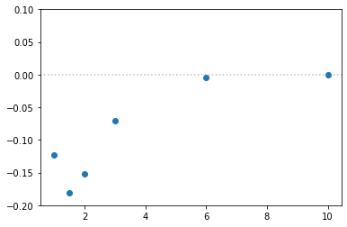

[1]:
import numpy as np
import matplotlib.pyplot as plt
from CADMium import Pssolver, Psgrid, Partition, Inverter
import CADMium
from copy import copy
[2]:
# dis_eq = np.linspace(0.5,5,30)
# dis_st = np.linspace(5.1,10,10)
# distances = np.concatenate((dis_eq, dis_st))
#distances = [1.0,1.5,2.0,3.0,6.0,10]
distances = [2.0]
energy = []
Za, Zb = 1,1
pol = 2
NP, NM = 7, [6,6]
loc = np.array(range(-4,5))
for d in distances:
a = d/2
L = np.arccosh(10/a)
grid = Psgrid(NP, NM, a, L, loc)
grid.initialize()
Nmo_a = [[1,0]]; Nmo_A = [[0,1]] # Alpha fragment
N_a = [[1,0]]; N_A = [[0,1]]
nu_a = 0.5
Nmo_b = [[1,0]]; Nmo_B = [[0,1]] # Beta fragment
N_b = [[1,0]]; N_B = [[0,1]]
nu_b = 0.5
Nmo_m = [[1,1]] #Molecular elctron configuration
N_m = [[1,1]]
part = Partition(grid, Za, Zb, pol, [Nmo_a, Nmo_A], [N_a, N_A], nu_a,
[Nmo_b, Nmo_B], [N_b, N_B], nu_b, { "AB_SYM" : True,
"interaction_type" : "dft",
"kinetic_part_type" : "libxcke",
"hxc_part_type" : "overlap_hxc",
"k_family" : "gga",
"ke_func_id" : 500,
})
#Setup inverter object
mol_solver = Pssolver(grid, Nmo_m, N_m)
part.inverter = Inverter(grid, mol_solver, { "AB_SYM" : True,
"use_iterative" : False,
"invert_type" : "wuyang",
"disp" : False,
})
part.optPartition.isolated = True
part.scf({"disp" : True,
"alpha" : [0.6],
"e_tol" : 1e-6})
part.optPartition.isolated = False
part.scf({"disp" : True,
"alpha" : [0.6],
"max_iter" : 20,
"e_tol" : 1e-6,
"iterative" : False,
"continuing" : True})
energy.append(copy(part.E.E))
print(f"Done with {d}")
energy = np.array(energy)
# np.save('h2_distance.npy', distances)
# np.save('h2_overlap.npy', energy)
----> Begin SCF calculation for *Isolated* Fragments
Total Energy (a.u.)
__________________
Iteration A B res
_______________________________________________________
1 -0.49357 -0.49357 1.000e+00
2 -0.48337 -0.48337 4.373e-02
3 -0.48014 -0.48014 1.404e-02
4 -0.47914 -0.47914 4.373e-03
5 -0.47883 -0.47883 1.333e-03
6 -0.47874 -0.47874 3.961e-04
7 -0.47872 -0.47872 1.134e-04
8 -0.47871 -0.47871 3.049e-05
9 -0.47871 -0.47871 1.127e-05
10 -0.47871 -0.47871 4.672e-06
11 -0.47871 -0.47871 1.967e-06
12 -0.47871 -0.47871 8.353e-07
----> Begin SCF calculation for *Interacting* Fragments
Total Energy (a.u.)
__________________
Iteration A B res
_______________________________________________________
I am continuing what you did
I am continuing what you did
1 -0.43483 -0.43483 1.000e+00
2 -0.46237 -0.46237 9.147e-02
3 -0.46739 -0.46739 1.733e-02
4 -0.46823 -0.46823 3.119e-03
5 -0.46835 -0.46835 5.955e-04
6 -0.46836 -0.46836 2.080e-04
7 -0.46835 -0.46835 7.766e-05
8 -0.46835 -0.46835 3.044e-05
9 -0.46835 -0.46835 1.223e-05
10 -0.46835 -0.46835 4.972e-06
11 -0.46835 -0.46835 2.037e-06
12 -0.46835 -0.46835 8.390e-07
Done with 2.0
[5]:
print(mol_solver[0,1].N)
print(mol_solver[0,1].N)
1
1
[6]:
h_energy = part.E.Ea
plt.scatter(distances, energy - 2 * h_energy)
plt.axhline(y=0, alpha=0.5, c="grey", ls=":")
plt.ylim(-.2,.1)
[6]:
(-0.2, 0.1)

[52]:
h_energy = part.E.Ea
plt.scatter(distances, energy - 2 * h_energy)
plt.axhline(y=0, alpha=0.5, c="grey", ls=":")
plt.ylim(-.2,.1)
[52]:
(-0.2, 0.1)

[46]:
vars(part.E)
[46]:
{'Ea': -0.23844197926790334,
'Eb': -0.23844197926790334,
'Ef': -0.4768839585358067,
'Tsf': 0.4620807664165111,
'Eksf': array([[-0.37083057, 0. ]]),
'Enucf': -0.9586482079839713,
'Exf': -0.25432479595589,
'Ecf': -0.021606175193767806,
'Ehf': 0.2956144541813114,
'Vhxcf': 0.22731030705386193,
'Ep': -0.10361407413796911,
'Ep_pot': -0.10138801621614,
'Ep_kin': -0.0009445526559095918,
'Ep_hxc': -0.0012815052659195076,
'Et': -0.5804980326737758,
'Vnn': 0.1,
'E': -0.4804980326737758,
'evals_a': array([], dtype=float64),
'evals_b': array([], dtype=float64),
'S': 0.008408703562903047,
'F': 0.018974622994724768,
'Ehcor': 0.0,
'Ep_h': -0.12210437561611617,
'Ep_x': 0.05241116437900334,
'Ep_c': 0.0021553599567060884}
[53]:
vars(part.E)
[53]:
{'Ea': -0.21261475257867704,
'Eb': -0.21261475257867704,
'Ef': -0.4252295051573541,
'Tsf': 0.6419010917350978,
'Eksf': array([[-0.79224759, 0. ]]),
'Enucf': -1.0955774472171382,
'Exf': -0.30909758371853363,
'Ecf': -0.023736227409023043,
'Ehf': 0.361280661452243,
'Vhxcf': 0.28330684675459084,
'Ep': -0.654010068876065,
'Ep_pot': -0.5689838591336773,
'Ep_kin': -0.07871891905257977,
'Ep_hxc': -0.006307290689807986,
'Et': -1.079239574033419,
'Vnn': 0.5,
'E': -0.5792395740334191,
'evals_a': array([], dtype=float64),
'evals_b': array([], dtype=float64),
'S': 0.3634945898331485,
'F': 0.6961056555557593,
'Ehcor': 0.0,
'Ep_h': -0.03942103341034814,
'Ep_x': 0.029481317179483935,
'Ep_c': 0.000878892432826895}
[54]:
vars(part.KSa.E)
[54]:
{'E': -0.4252295051573541,
'Ec': -0.023736227409023043,
'Ex': -0.30909758371853363,
'Eks': array([[-0.79224759, 0. ]]),
'Vks': array([[-1.43414868, 0. ]]),
'Ts': 0.6419010917350978,
'evals': array([], dtype=float64),
'Enuc': -1.0955774472171382,
'Vext': -0.6218777797762454,
'Vhxc': 0.28330684675459084,
'Eh': 0.361280661452243,
'Et': -0.4252295051573541,
'Vnn': 0.0,
'Ehcor': 0.0}
[ ]: